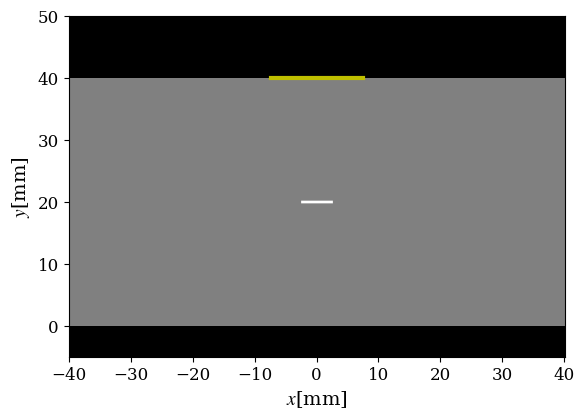
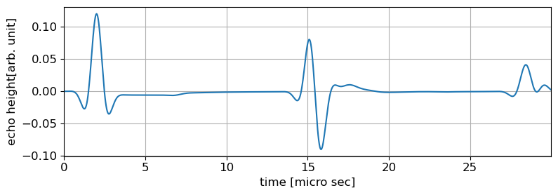
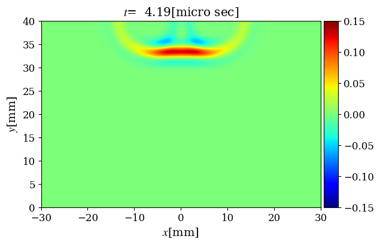
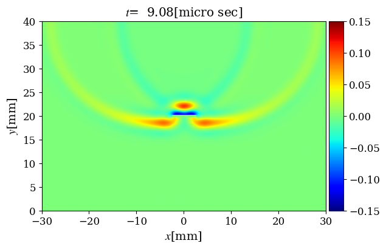
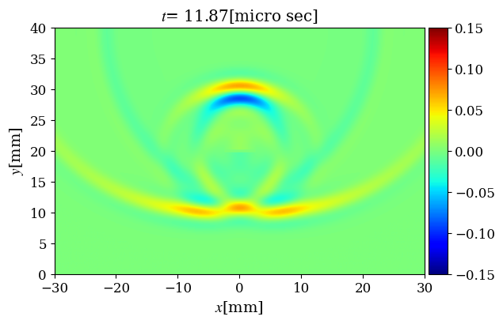

反射法2: 垂直入射，1探触子法
きずエコーの発生状況
超音波探傷試験の目的は，物体内部のきずを検出することにある．
そこで，試験体内部に空洞がある場合の超音波の挙動を調べる．
ここでは，探触子直下に水平き裂があるケースを考える．
シミュレーションモデルを次の図に示す．

シミュレーションモデル
計算モデルは、反射法1と水平き裂が存在することを除き同じ．
ここでもグレーの領域が試験体を，黄色の実線が送受信位置を表す．
き裂の幅は5mm, 位置は探触子直下，板厚方向中央としている．
この場合に得られたAスキャン波形を次の図に示す．

Aスキャン波形
この図のように，15\(\mu{\rm s}\)付近にき裂からのエコーが現れ，
その一方で底面からの反射波がき裂が存在しない場合に比べて
かなり小さくなっている．
試験体内部の超音波の伝播挙動は次の動画で示したようになる．
試験体内部の超音波伝播挙動
ここに示されるように，き裂に到達した入射波が散乱され，その一部は
送信側に戻っていくことが分かる．き裂が存在しない場合には
見られなかったエコーはこのようにして生じたものである．
次の図は、3つの異なる時刻における試験体内部の場をスナップショット
として示したものである。最初の時刻では，探触子で励起された
入射波が鉛直下向きに進んでおり，き裂が無い場合と全くおなじ挙動
を示している．次に示したスナップショットは、き裂に到達し
散乱波が発生した直後の状況を示している．
入射側に戻る強い散乱波が発生していることに加え，き裂の背後に
回り込むように超音波が進展していることが分かる．
これは，き裂の端部で回折によって生じたものである．
その結果，さらに時刻が経過した次のスナップショットでは，
き裂直下の方向にもの超音波が伝わっていることが分かる．
つまり，き裂が存在してもその背後が超音波伝播の意味で遮蔽
されることにはならない．



試験体内部の超音波伝播挙動
きず検出原理
以上の結果から明らかな通り，き裂が存在する場合，き裂では散乱波
が発生する．き裂からの散乱波は超音波探傷の分野ではきずエコー
あるいはき裂エコーと言われる．
きずエコーは、きずが存在しない試験体や、同じ試験体でもきずが
存在しない位置では観測されない．
従って，計測したAスコープ波形に，きずからのエコーが含まれれば
その位置にはきずが存在することが分かる．
さらに，超音波伝播速度\(c\)が既知であれば、きずエコーが現れる時刻
\(t_{f}\)$とを用いて，送受信点からの距離
\begin{equation}
L=\frac{ct_f}{2} \label{tof}
\end{equation}
の位置にきずが存在することも分かる．
なお，2で割るのは，\(ct_f\)は探触子ときずの間を往復する時間
を与えるためである．
また，垂直入射を行っていることから，きずは探触子からの送信
方向に\(L\)だけ進んだ距離にあると考えることができ，
以上のことから距離だけでなくきずの位置が特定できる．
きずの位置は、そのきずがどのようにして生じたものか，
材料の強度にどのような影響を与えるかといったことを
評価する上で重要な情報となる．
プロジェクト
- 探触子をきずの直上から水平方向に位置をずらして設置したとする．このとき
き裂エコーはどのように変化すると予想されるか検討せよ．
- き裂と探触子の位置は決まっているとし，き裂の大きさが変化したとする．
このとき、きずエコーの振幅や波形にどのような変化が起きるか検討せよ．